Bücher
und Zeitschriften, Rezensionen, Aufsätze, Internetlinks, Verlagskontakte,
Literaturrecherche- und bestellung, Quellensammlungen 24
Bücher
und Zeitschriften, Rezensionen, Aufsätze, Internetlinks, Verlagskontakte,
Literaturrecherche- und bestellung, Quellensammlungen 24Buchkatalog <> Buchhandel <>
Bücher, CD-Roms, Videos <>
Haus + Garten bei amazon.de Antiquariat bei amazon.de
Kunst + Kultur bei amazon.de
Ratgeber bei amazon.de
Fachbücher bei amazon.de
<> Mediumbooks<>Worldwide<>
Virtuelle Bibliothek Denkmalpflege der Uni Freiburg <>
Bauschadensliteratur Fraunhofer IRB Verlag <> Ebook - früher Libri <>
Online-Landesbibliothek Düsseldorf <> Subito <>
Gabriel <> Deutsche Nationalbibliothek <>
British Library <> Library of Congress <>
Global Info <> Weltkunst Verlag
Franz A. Taubert Versandbuchhandlung <> Reclam <> Suche mit Bookfinder (engl.) <> Suche mit Bibliofind (engl.)<> Suche mit Alibris (engl.) <> Suche mit ZVAB (deutsch)<>Eigene Bücher verkaufen mit Yourbooks <> www.bod.de - Preiswerte Publikation nach Bedarf / Books On Demand
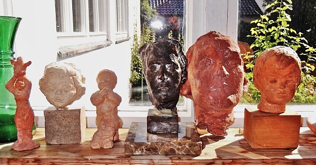
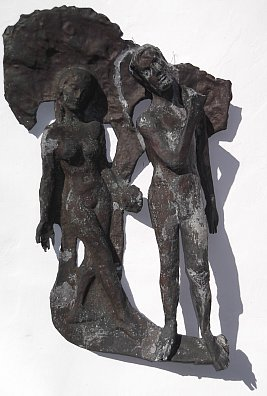
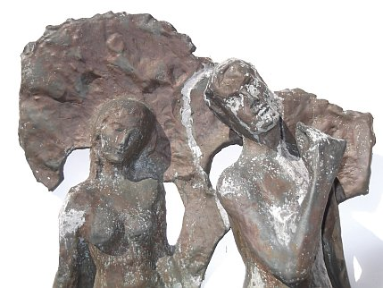
Vom "Geheimbildhauer"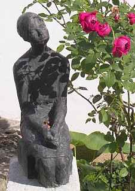
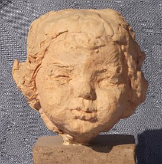
Gleichsam im Vorbeigehen erfährt der Leser, wie Roland von Bohr die merkwürdigsten Lebensstationen durchstreift: Vom Geburtsort Wien noch als Kind nach St. Petersburg, vom refombewegten Ascona ins bierdimpflige München, nach Hallein, Salzburg und in die Schweiz, auftragssuchend von der Türkei nach Schweden, und immer wieder hin und her, von grotesken Anekdoten zu Freundschaften und erwiesener und eben auch versagter Anerkennung. Aus russischer Landidylle und Petersburger Noblesse zu reformbewegten Langhaar-Vegetariern im hakenkreuzgeschmückt-"gotischen" Gewand, die dem jungen Mann 1914 wohl zu imponieren wissen, geht es über die Wandervögel zu den k.u.k. Soldaten und ins aufgewühlte Wien der 1920er. Weiter und immer weiter durch fast das ganze 20. Jahrhundert. Tiefgründig all die Einblicke in die Ateliers und Werkstätten seiner Lehrer "der alten Schule": Anton Hanak in Wien und Joseph Wackerle, München, bei Prof. Pfaffenbichler an der Fachschule für Holzbearbeitung, Hallstatt und in der Werkstatt für religiöse Kunst des Hanakschülers Jakob Adlhart in Hallein, an dessen spektakulärem "Schreckenschristus" für St. Peter in Salzburg er mitarbeiten durfte.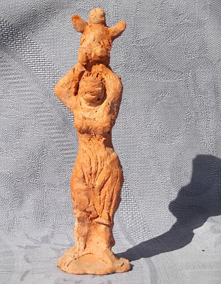
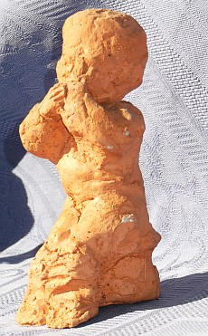
Künstlerische Gewißheit und seine breite Ausbildung stützen Bohrs Treue zum Gegenständlichen, zum sakralen, aber auch gerne zum mythologischen Thema - selbst in späterer Zeit, als das gar nicht mehr modern war. Trotz lebenslänglicher Suche nach Form und Inhalt, nach Gestalt und Stil, nach Werkzeug und Werkstoff. Im gleichen Sinn findet er schon früh zur lebenslangen Liebe zu seiner mitwirkenden Künstlergattin Eliza aus Arnstadt in Thüringen. Bei all dem lassen uns Peter von Bohr, die Kunstwerke und zeitgeschichtlich aufschlußreiche Fotografien zu Weggefährten werden - ein Panoptikum der Geschichte, Lebens- und Kunstentwicklung, das wohl seinesgleichen sucht. Und trotz allerlei Einblicke in das Leben der Bohrs fern aller Spießbürgerei niemals peinlich, eher heiter gestimmt.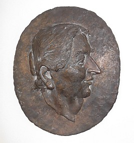
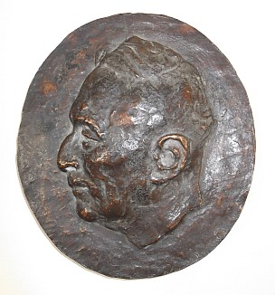
Der Bildhauer Bohr findet seine Gestalt vom Kleinen zum Großen, vom ornamental durchbrochenen "Gewurle" einer an mittelalterliche Mystik erinnernden Schnitzkunst zur stillen, antiker Grabplastik folgenden Archaik. Im holzgeschnitzten Schachspiel von verblüffender Individualität bis zum letzten Bauern, Porzellan feinglatt perfektionierend, doch dann auch nur derb, dafür vielsagend verkürzte Materialität und Form der Großfigur in und an Architektur, an Autobahnen und im Brunnen. Die für Clemens Holzmeister erschaffenen Allegorien für das alte Salzburger Festspielhaus, der "Thukydides" vor der Münchner Staatsbibliothek (fälschlicherweise Hans Vogel zugesprochen) und der "Kundschafter-Brunnen" vor St. Stephanus in Nymphenburg, der "Petrus" für den Dom zu Lund, der Römerstein in Bad Gögging, die reich figurierten Säulen der Rüschlikoner Bruderschafts-Kapelle sowie die markanten Köpfe von Karajan und Cosima Wagner seien als bekanntere Beispiele Bohrschen Kunstschaffens benannt. Nicht zu vergessen die so feurigen Pastelle aus München, duftige Aquarelle, umwerfende Porträtskizzen. Früchte eines Lebenswerkes, erschaffen nicht ohne Humor, aber manchmal auch mit Zweifel und in Verzweiflung. Peter von Bohrs Buch bietet von allem etwas und läßt uns so der Entwicklung seines Vaters und dessen überzeitlichem Stilempfinden folgen. Auch in den mehr oder minder stark vom jeweiligen Auftraggeber "mitgestalteten" Werken.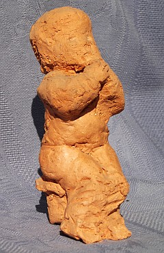
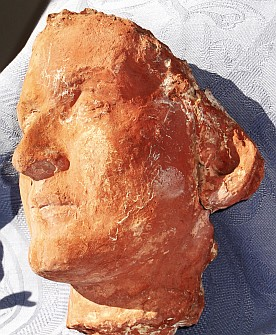
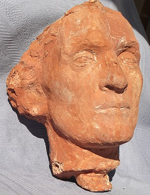
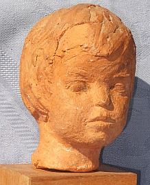
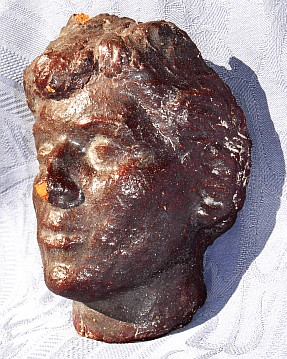
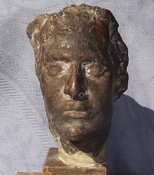
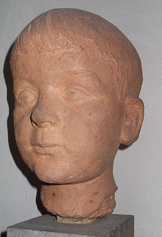
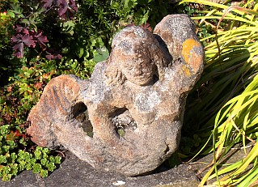
Petzet/Mader: Praktische Denkmalpflege - Rezension in ARX und BURGEN UND SCHLÖSSER
H. Thomas (Hrsg.) Denkmalpflege für Architekten - Vom Grundwissen zur
Gesamtleitung - Rezensionen in ARX, BURGEN UND SCHLÖSSER, SCHÖNERE HEIMAT, DENKMALPFLEGE IN SACHSEN 1998
Rezension2ein
Kollege im BauNetz zum Vergleich. Lesenswert!
Zeune: Burgen, Symbole der Macht - Rezension in ARX, BURGEN UND SCHLÖSSER, FRANKENLAND, SCHÖNERE HEIMAT, DENKMALPFLEGE IN SACHSEN 1997
Louis Krompotic: Relationen über Fortifikation der Südgrenzen des Habsburgerreiches - Rezension in ARX und SCHÖNERE HEIMAT
Hubel, Schuller und Mitarbeiter: Der Dom zu Regensburg - Vom Bauen und Gestalten einer gotischen Kathedrale - Rezension in ARX
Ziesemann, Krampfer, Knieriemen: Natürliche Farben, Anstriche und Verputze selber herstellen - Rezension in ARX
Ross, Stahl: Praxishandbuch Putz - Stoffe, Verarbeitung, Schadensvermeidung - Rezension in BURGEN UND SCHLÖSSER
Wetzel und 4 Mitautoren: Historische Holzfachwerkbauten, Erhalt und Sanierung, Band I: Sanierungspraxis- Rezension in ARX und bausubstanz
Hermann G. Meier: Sanierputze, Ein wichtiger Bestandteil der Bauwerksinstandsetzung
Horst Rusam: Anstriche als Beschichtungen für mineralische Untergründe, Eigenschaften und fachgerechte Aufbringung
Erwin Dietz: Denkmalgeschützte Gebäude, Historisch-technische Wertmaßstäbe
Sándor O. Pállfy und 9 Mitautoren:Wasserkraftanlagen, Klein- und Kleinstkraftwerke
Gastautoren:
Karin Schade: Fachwerkwörterbücher - eine Hilfe beim Lesen des Holznagels? - Kritisch vergnügliche Rezension in "Der Holznagel"